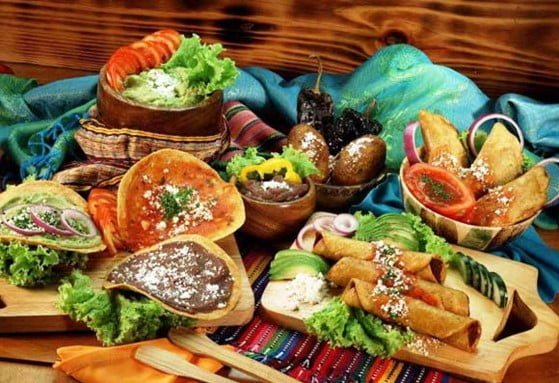
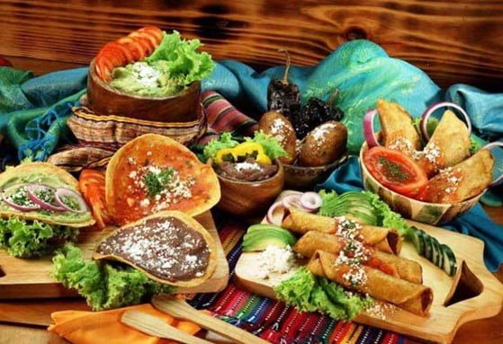
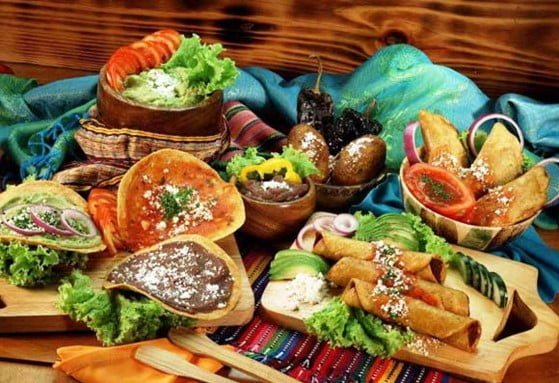

¡Bienvenido a Raíces Guatemaltecas! Somos un restaurante especializado en auténtica comida típica de Guatemala, donde cada plato está impregnado de sabores tradicionales que reflejan la riqueza culinaria de nuestra cultura. Además de ofrecer una experiencia gastronómica auténtica, también nos enorgullece compartir los ingredientes autóctonos de Guatemala con nuestra comunidad. En nuestra tienda, encontrarás una variedad de productos como maíz, frijoles, chiles y verduras frescas, cuidadosamente seleccionados para brindarte la calidad y autenticidad que mereces. ¡Ven y descubre el verdadero sabor de Guatemala en Raíces Guatemaltecas!

Brayna Abigail Flores Rodriguez
5to BACO
Liceo valle del sol